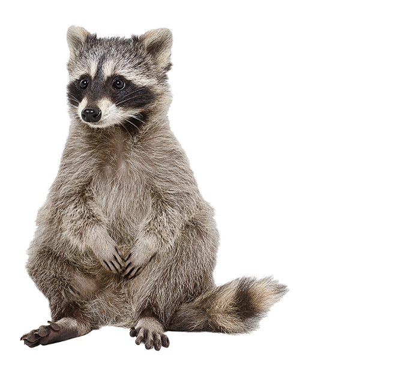
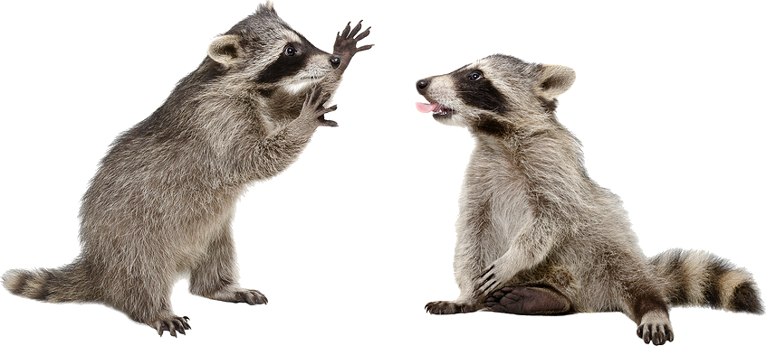
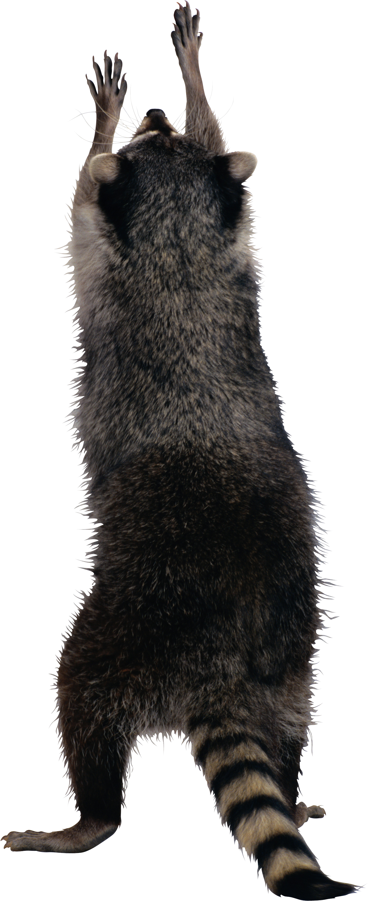

Guaxinins.
Procyon lotor
Os guaxinins são mamíferos onívoros conhecidos por sua aparência cativante,
com máscaras faciais distintivas e caudas listradas. Encontrados principalmente na América do Norte,
esses animais adaptáveis também se estabeleceram na Europa.
São criaturas inteligentes e curiosas que habitam uma variedade de ambientes,
desde florestas até áreas urbanas, tornando-os um dos animais mais intrigantes da vida selvagem.

Características
Os guaxinins são notáveis por sua destreza manual, sendo capazes de manipular objetos e até mesmo abrir fechaduras. Além disso, possuem uma dieta variada
que inclui desde pequenos mamíferos até insetos e plantas aquáticas. Sua habilidade de adaptação a ambientes urbanos é notável, e eles frequentemente
reviram lixeiras em busca de comida. Eles também são conhecidos por serem excelentes nadadores, sendo capazes de percorrer longas distâncias na água.

Comportamento
Devido à sua dieta versátil, o guaxinim é frequentemente atraído por resíduos humanos, tornando-os considerados pragas
suscetíveis a caça e atropelamentos.
Em interações com seres humanos, eles tendem a ser pacíficos, mas podem se tornar agressivos
e morder, especialmente na presença de cães e outros animais domésticos.
Esses animais geralmente se aproximam de
margens de rios para se alimentar e se higienizar, ganhando o apelido de "ursos lavadores". São criaturas noturnas e solitárias,
com machos e fêmeas se reunindo apenas para fins reprodutivos.

Habitat do guaxinim
O guaxinim é encontrado predominantemente em florestas de folhas caducas ou mistas, onde faz seus abrigos em árvores ocos, tocas ou covas próximas a rios e ambientes aquáticos. Devido à sua capacidade de aproveitar resíduos humanos e até mesmo alimentos de animais de estimação, eles conseguiram se aclimatar a ambientes urbanos, sendo avistados com frequência em garagens, sótãos e áreas residenciais.
